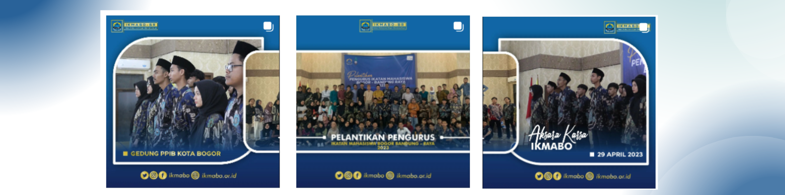

Sejarah
Ikatan Mahasiswa Bogor (Ikmabo) adalah organisasi yang didirikan pada tahun 1990 oleh sekelompok mahasiswa asal Bogor, awalnya dikenal sebagai Corp Ikatan Mahasiswa Bogor (CIMB). Meskipun memiliki sifat kedaerahan, Ikmabo bersikap terbuka dan melibatkan mahasiswa dari berbagai daerah, seperti Sukabumi dan Depok. Ikmabo memiliki banyak alumni, termasuk dari UIN SGD, Unjani, UPI, dan Unpad.
Pada sekitar tahun 2003, Ikmabo mendapatkan tambahan nama "BR" (Se-Bandung Raya) dalam AD/ART-nya. Organisasi ini aktif dalam berbagai kegiatan, seperti pembinaan SDM, bakti sosial, olahraga, kesenian, dan kewanitaan sesuai dengan amanat organisasinya.
Sekarang, Ikmabo masih aktif di Bandung dengan sekretariat di sekitar Kampus UIN SGD Bandung. Mereka telah meraih prestasi dalam bidang olahraga sepak bola dan mengadakan diskusi rutin, serta menerbitkan bulletin TALAS untuk mengembangkan bakat intelektual mahasiswa mereka.
Kegiatan

Pelantikan dan Halal bihalal Ikatan Mahasiswa Bogor - Bandung Raya priode 2023-2024
Ramadhan

Ramadhan festival yang diadakan dibandung dan dipartisipasi oleh banyak anak anak
Farm House Lembang

Berada di jalur utama Bandung-Lembang, Farm House menjadi objek wisata yang tidak
pernah sepi pengunjung. Selain karena letaknya strategis, kawasan ini juga
menghadirkan nuansa wisata khas Eropa. Semua itu diterapkan dalam bentuk spot swafoto
Instagramable.
Observatorium Bosscha

Memiliki beberapa teleskop, antara lain, Refraktor Ganda Zeiss, Schmidt Bimasakti,
Refraktor Bamberg, Cassegrain GOTO, dan Teleskop Surya. Refraktor Ganda Zeiss adalah
jenis teleskop terbesar untuk meneropong bintang. Benda ini diletakkan pada atap kubah
sehingga saat teropong digunakan, atap tersebut harus dibuka. Observatorium Bosscha
boleh dikunjungi oleh siapapun, tanpa tiket. Namun, bagi yang ingin menggunakan
teleskop Zeiss, wajib mendaftarkan diri. Untuk instansi atau lembaga pendidikan,
diberikan jadwal hari Selasa sampai Jumat. Sementara itu, kunjungan individu dibuka
setiap hari Sabtu.